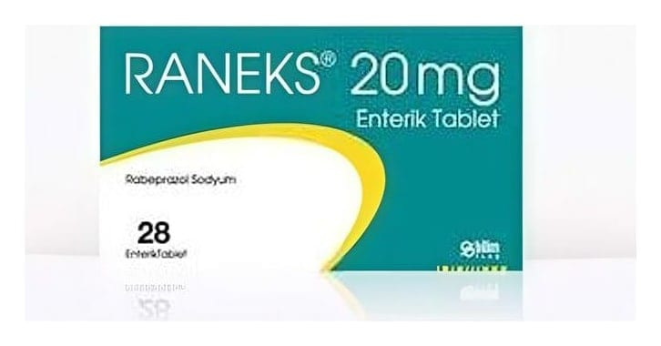

Raneks 10 mg Enterik Tablet , 28 Adet

Ne için kullanılır
KT · Bölüm 1• RANEKS, özel geciktirilmiş salımlı enterik formülasyonu sayesinde, midede parçalanmaksızın bağırsaklara geçen ve burada emilen, yuvarlak, bikonveks, sarı renkli, enterik kaplı bir tablettir. Her bir enterik tablet, 9,42 miligram rabeprazole eşdeğer, 10 miligram rabeprazol sodyum içerir.
RANEKS, 28 tablet içeren alüminyum/alüminyum folyo blister ambalajlarda piyasaya sunulmaktadır.
• RANEKS’in etkin maddesi olan rabeprazol sodyum, Proton Pompası İnhibitörleri adı verilen bir ilaç sınıfında yer almaktadır. Bu sınıftaki ilaçlar, mide asidi salgılanmasında önemli bir yeri olan ve midedeki bazı özel hücrelerde bulunan proton pompası denilen sistemin çalışmasını engelleyerek, mide asidinin azalmasını sağlarlar. Mide asidinin azalması, mide, barsak ve yemek borusunda bulunan ülserlerin (peptik ülser) iyileşmesini ve ağrının giderilmesini sağlar.
• RANEKS, aktif duodenum (on iki parmak bağırsağı) ülseri, aktif selim mide ülseri, semptomatik erozif ya da ülseratif gastro-özofajiyal reflü hastalığı (GÖRH) tanısı konulmuş hastaların tedavisinde kullanılmaktadır. GÖRH, mide sıvısının anormal bir şekilde üstteki yemek borusuna geçmesi ve burayı aşındırması veya ülserlere yol açması ile ortaya çıkan bir hastalıktır. RANEKS aynı zamanda, gastro-özofajiyal reflü hastalığının uzun dönemli tedavisi için (GÖRH idame), orta derecede ile çok şiddetli gastro-özofajiyal reflü hastalığının belirtilerinin giderilmesi için ve mide asidinin sürekli olarak çok miktarlarda bulunduğu bir hastalık tablosu olan Zollinger-Ellison Sendromu’nda da kullanılır.
RANEKS ayrıca, uygun antibiyotik ilaçlar ile kombinasyon şeklinde, mide ülseri oluşumunda rol oynayan bir bakteri olan Helicobacter pylori’nin eradikasyonu (ortadan kaldırılması) için de kullanılmaktadır.